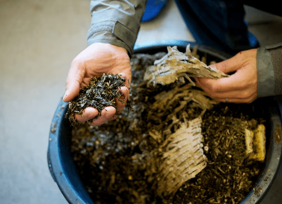
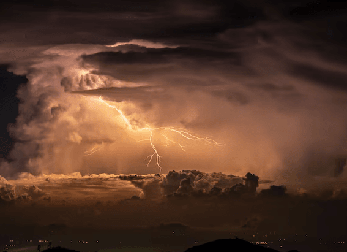
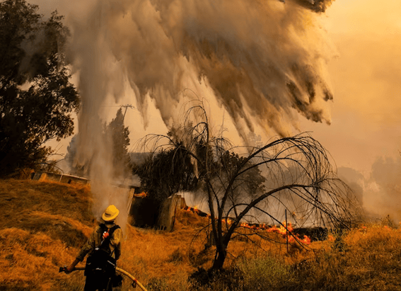

NATIONAL GEOGRAPHIC
6 hiking and biking trails to explore in the Alps this summer
TRAVEL
1. The Segnes Trail, Switzerland
There’s always something afoot at the resort of Laax. In winter, skiers leap off any pipe, rail or lump they can find, having honed their skills at the indoor Freeride Center; in summer, it’s bikers on the Segnes Trail. Launched last summer, this new addition to the growing network of bike trails that web the villages of Flims, Laax and Falera takes mountain bikers 1.7 miles over rock slabs and hairpin bends to join the legendary 4.7-mile Runca flow trail.
2. A two-wheel tour of Portes du Soleil, France
Containing a network of resorts including Les Gets, Morzine, Avoriaz, Châtel, Morgins and Champéry, the Portes du Soleil region is a must-ride for mountain bikers, all combined on one lift pass. Les Gets is the perfect base, with 12 runs in the resort alone, along with three jump parks, numerous technical zones for the more advanced, a bike park and top-level tuition at Les Gets Bike School.
3. Trekking in Trentino, Italy
Between Lake Garda and the Dolomites, Trentino is a region of woodlands, lakes, lush valleys and historic towns. The region’s easy-to-explore trails include the two day route through the Val di Rabbi from Malga Stablasolo farmstead, overnighting at the Rifugio Dorigoni mountain hut, via the Val Saènt waterfalls, then onwards under the peaks of Cima Collecchio to Lake Corvo.
4. On foot in the Bernese Oberland, Switzerland
Walk in the shadow of the nation’s trio of iconic peaks, Eiger, Mönch and Jungfrau. You don’t need to tackle the summits; many of this region’s hikes are accessible but challenging, including the route up the 4,700ft Höhturli Pass. Inntravel has a seven night, self-guided trip from Grindelwald to Kandersteg, taking in the pretty town of Murren, from £1,595 per person, including half-board in three- and four-star hotels and rail travel from London.
5. Hike and swim Innsbruck’s gorges, Austria
Innsbruck is superb for a summer city break, a compact Alpine city with several gorges offering splendid hiking. Try the Mühlauer Klamm area. At the foot of the Nordkette range, a signposted path takes travellers along a river that rushes through a gorge and over a series of waterfalls. Ehnbachklamm, in the little town of Zirl, is another gem, as is Klammsteig, a gorge trail with a stairway cut into the rock: all accessible via public transport.
6. The best bits of Mont Blanc, France
Take the train to Europe’s highest mountain on a one-change, seven-hour ride from London via Paris for a week of guided hiking around Chamonix, including the most spectacular Tour du Mont Blanc segments. Walk seven hours daily, with ascents of 500ft. A seven-night group tour with Exodus costs £1,548 per person, including B&B accommodation, rail travel and most meals.
Comments :
- john Very good
- john Very good
Leave a Reply
Your email address will not be published. Required fields are marked*
Related posts:
-
Summer storms can strike suddenly. Here’s what causes them.
For many of us, warmer months are a time to relax, spread out in the warm sun, and maybe have a picnic. But who among us hasn’t experienced the dread of seeing storm clouds form as if out of nowhere
View article -
How to compost and why it’s good for the environment
About a third of the food produced around the world goes to waste, and much of it ends up in landfills where it becomes a source of methane, a greenhouse gas 25 times more potent than carbon dioxide. Eliminating waste
View article -
This summer's extreme weather is a sign of things to come
Two-thirds of the way through the year, 2023 seems destined to be remembered as the year that extreme weather events left the Northern Hemisphere reeling.
View article